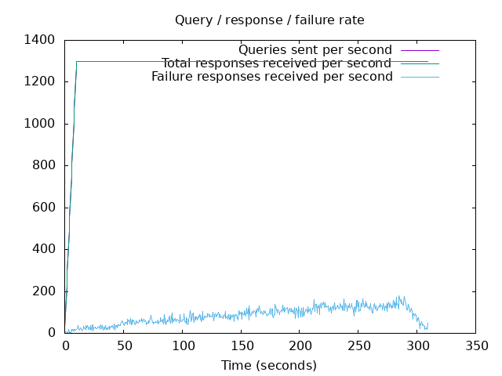
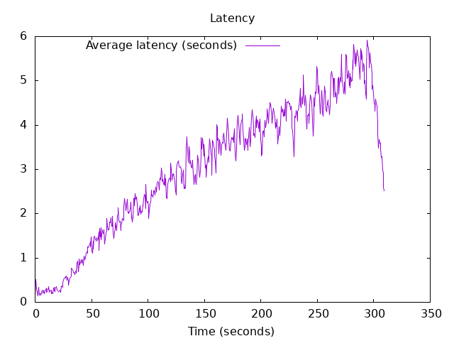

DNS Resolution Performance Testing Tool Version 2.14.0 [Status] Command line: resperf -P 20250620-0842.gnuplot -M doh -s 79.127.218.224 -O doh-uri=https://protective.joindns4.eu/dns-query -d domains_shuffled.list -C 50 -m 1300 -b 1400 -q 500000 -R -r 10 -c 300 -t 30 -F 0 [Status] Sending [Status] Ramp-up done, sending constant traffic [Status] Waiting for more responses [Status] Testing complete Statistics: Queries sent: 396499 Queries completed: 396499 Queries lost: 0 Response codes: NOERROR 253093 (63.83%), SERVFAIL 26038 (6.57%), NXDOMAIN 117368 (29.60%) Run time (s): 326.435833 Maximum throughput: 1300.000000 qps Lost at that point: 0.00% Connection attempts: 63 (62 successful, 98.41%) DNS-over-HTTPS statistics: HTTP/2 return codes: 200: 396499
 